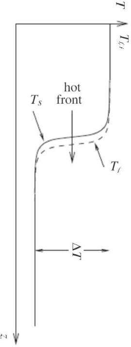

Packed Bed Thermal Reservoirs
Packed Bed Thermal Reservoirs (PTBRs) are a technology used for storing heat energy. In their most basic form, they have two main components; a cylindrical vessel and a solid storage medium. The solid storage medium is in particulate form and is packed into the containment vessel with gaps to allow the working fluid to flow and facilitate heat transfer. Below is an example of how PBTRs may be used for electricity storage.
In this example, electrical energy is used to drive turbomachinery (via an induction motor for instance) which simultaneously compresses and expands the working fluid (Argon gas here) on opposite sides of the circuit, inducing a flow. Compression work increases the internal energy of the gas, raising its temperature from ambient to the pre-selected hot reservoir inlet temperature TH. Passing through the packed bed, the temperature difference between the working fluid and the solid particles drives heat exchange between the two, raising the solid's temperature to TH and returning the working fluid to ambient temperature. As working fluid at TH continues to flow into the hot reservoir, a thermal front passes down through the packed bed, until the entire solid medium has reached TH. A similar process to that above occurs on the cold side of the circuit, with heat transfer occurring in the opposite direction, reducing the temperature of the solid medium in the cold reservoir to TC. When the operating temperature has been reached uniformly in both the hot and cold reservoirs (TH and TC respectively) the system is said to be fully-charged. At this point, the system can then run in reverse in order to extract heat energy, generating electricity. This system essentially acts as a heat pump when charging and a heat engine when discharging.
